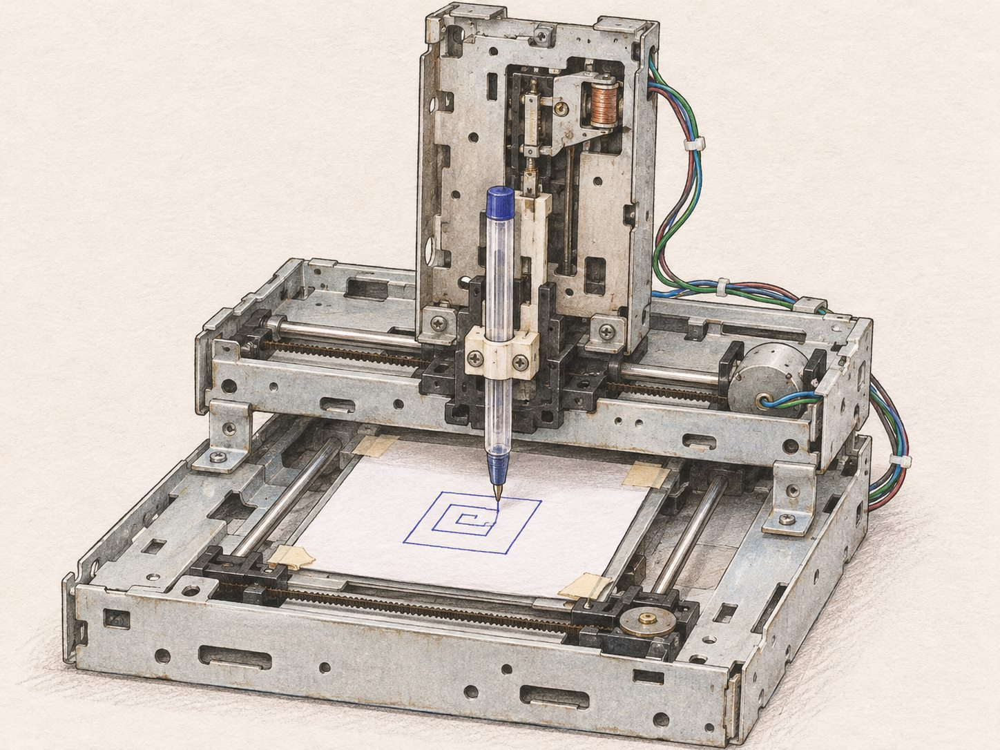
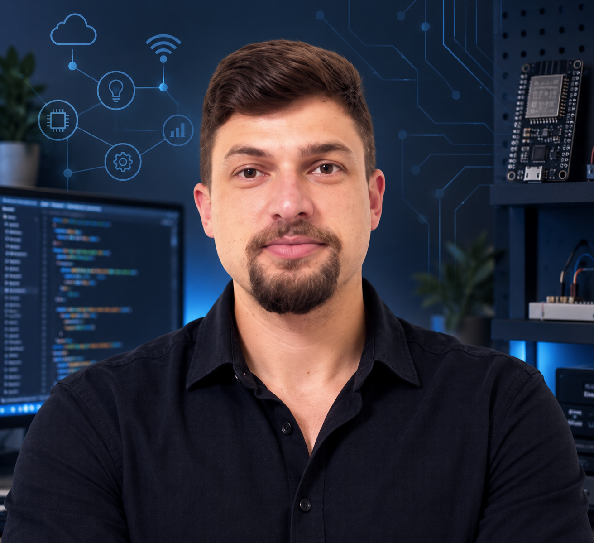
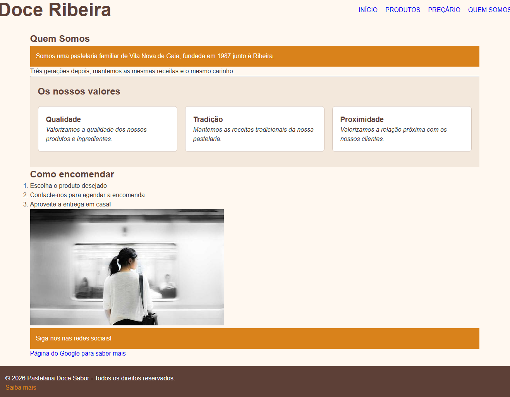
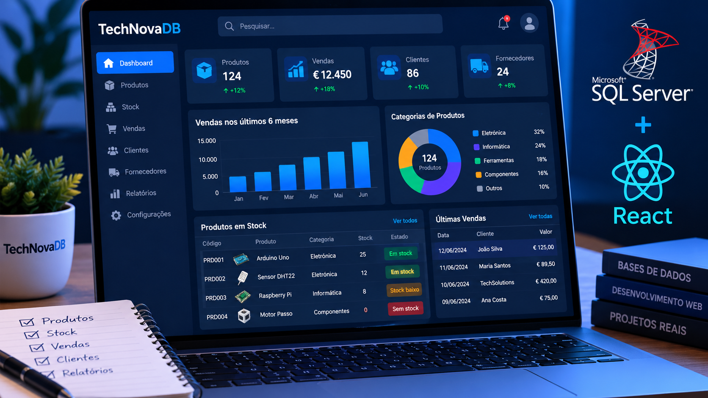
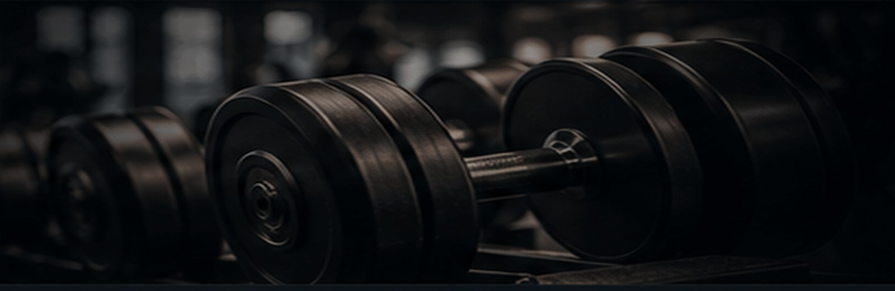
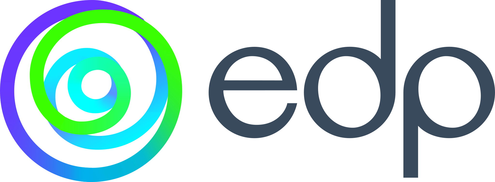
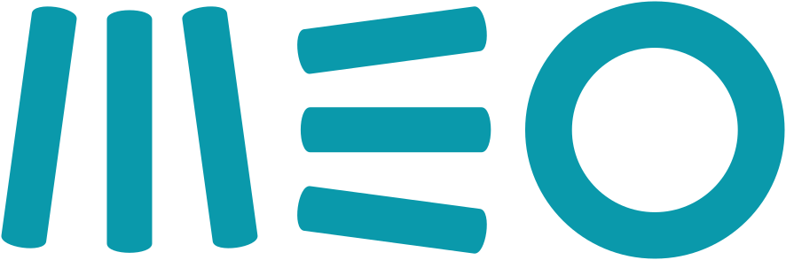
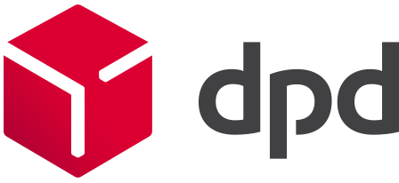

ELETROTÉCNICA · INFORMÁTICA
Roziel Lima Pimenta
Manutenção, assistência técnica e suporte TI
Projetos e experiência prática em eletrotécnica, assistência técnica e informática.
IDEIAS QUE GANHARAM FORMA
Projetos
Projetos práticos que unem eletrotécnica, automação e desenvolvimento web.

Doce Ribeira
Problema: apresentar a pastelaria, produtos e preços. O que fiz: site multipágina como projeto de Web Design. Tecnologias: HTML e CSS.
IoT e Programação
Experiências com dispositivos conectados, redes e programação para automação.
TechNovaDB
Problema: organizar catálogo, stock e operações. O que fiz: modelo relacional e scripts SQL de criação e validação. Tecnologia: SQL Server.
Meu Plano de Treino
Aplicação web para planear treinos e acompanhar a evolução.PERCURSO
Sobre
Tenho formação em Eletrotécnica e Administração e experiência em funções de atendimento, operações, contratos e back-office. Atualmente frequento o CET de Aplicações de Informática de Gestão e desenvolvo projetos para aplicar conhecimentos de bases de dados, programação e tecnologias web.
Gosto de perceber como funcionam os equipamentos e os sistemas, resolver problemas técnicos e aplicar o que aprendo em projetos práticos.
Competências
Formação
Técnico em Eletrotécnica
Escola Técnica Electra · Brasil · 2016 · 1.300 horas
Projeto final Mini CNC · 2.º lugarTécnico em Administração de Empresas
Colégio Estadual México · Brasil · 2008
Formação em curso
Técnico Especialista em Aplicações de Informática de Gestão · IEFP · online
CET · nível 5Formação complementar em TI
IEFP · Web Design · 300 horas · 2026
IEFP · Power BI básico
NetAcad · HTML, CSS e IoT
SENAI · Lógica de programação · Brasil
Fábrica Verde · Montagem e manutenção de microcomputadores · Brasil
Idiomas
InglêsAulas particulares · em curso
A2Nível atual
B1Objetivo
EspanholBásico
PERCURSO PROFISSIONAL
Experiência
Desenvolvimento e formação em TI
Portefólio pessoal · NetAcad · IEFP
Desenvolvimento do portefólio e projetos pessoais; formação NetAcad em HTML, CSS e IoT. Em curso: CET de Aplicações de Informática de Gestão, incluindo aprendizagem de sistemas e Windows Server.
Técnico Reparador de Vidro Automóvel
ExpressGlass · Coimbra
Reparação e substituição de vidros, incluindo apoio a duas lojas e serviços móveis em períodos de pico.
Resumo da função
- Avaliação de danos e reparação ou substituição de vidros automóveis com ferramentas e equipamentos específicos.
- Aplicação de adesivos e vedantes; registo das intervenções e documentação técnica.
- Calibração de câmaras ADAS e verificação dos sistemas de assistência à condução.
Assistente de Loja

Gestão de contratos, faturação e ocorrências, com atendimento em elevado volume e rotação de processos.
Resumo da função
- Gestão de contratos e validação documental em sistemas internos.
- Apoio em faturação e em soluções de energia, incluindo sistemas fotovoltaicos.
- Acompanhamento de ocorrências e operações de caixa num contexto de elevado volume e rotatividade.
Assistente de Loja · Back Office

Atendimento, propostas, contratos e pós-venda, com utilização de SAP, ERP, CRM, SFA e NSOM.
Resumo da função
- Gestão de propostas, contratos, documentação e processos de pós-venda; apoio ao cliente e vendas de telecomunicações.
- Utilização de SAP, ERP, CRM e Portal SFA em processos comerciais e de serviço.
- Utilização de aplicações internas como ATLAS, Mobilix, SIREL e NSOM/N-SOM, entre outras.
- Atendimento e back-office em contexto de elevado volume e rotação de processos.
- Configuração de telemóveis, cartões SIM, routers e boxes, com apoio técnico inicial ao cliente.
Distribuidor

Distribuição de encomendas, organização das entregas e cumprimento de prazos.
EXPERIÊNCIAS ADICIONAIS
Experiência complementar
Atividades comerciais e técnicas que reforçam a experiência prática e o contacto com clientes.
Promoção e reposição comercial · Sociprime
Ações em vários supermercados, com promoção de produtos Samsung, LG e Rowenta.
- Demonstração de produtos e esclarecimento de dúvidas dos clientes.
- Reposição e organização de mercadorias de várias categorias.
- Reposição junto à frente de caixa (zona de produtos de impulso).
- Atualização da exposição conforme as orientações recebidas e manutenção da apresentação do espaço.
Eletricidade, construção civil e manutenção
Experiência prática de apoio técnico e operacional em diferentes ambientes de trabalho.
- Apoio em trabalhos de instalação elétrica e preparação de materiais.
- Tarefas de servente e apoio geral em obra, incluindo alvenaria.
- Preparação de superfícies, pintura e acabamentos.
- Utilização de ferramentas manuais e elétricas; organização de materiais, equipamentos e espaços.
Competências operacionais
VAMOS CONVERSAR?
Contactos
Estou disponível para oportunidades, colaborações e novos projetos.